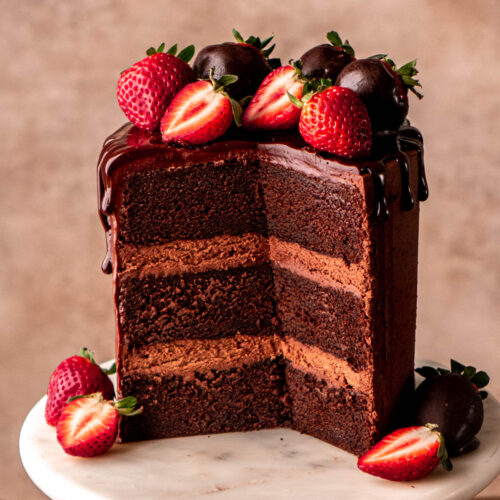

Popular Desserts
1. Tiramisu

Tiramisu is an Italian dessert that is widely loved and enjoyed around the world. It consists of layers of coffee-soaked ladyfingers, creamy mascarpone cheese, and cocoa powder. Tiramisu is known for its rich flavors and delicate texture, making it a favorite dessert for many.
2. Chocolate Cake
Chocolate cake is a classic dessert that never fails to satisfy chocolate lovers. It is made with moist and decadent chocolate cake layers and usually frosted with chocolate ganache or buttercream. Chocolate cake is a timeless treat enjoyed by people of all ages.
3. Crème Brûlée

Crème brûlée is a creamy and luscious French dessert with a caramelized sugar topping. It features a smooth custard base made from cream, egg yolks, and vanilla. The caramelized sugar creates a delightful contrast of textures, with a crisp and crackly top layer. Crème brûlée is a sophisticated and indulgent dessert choice.